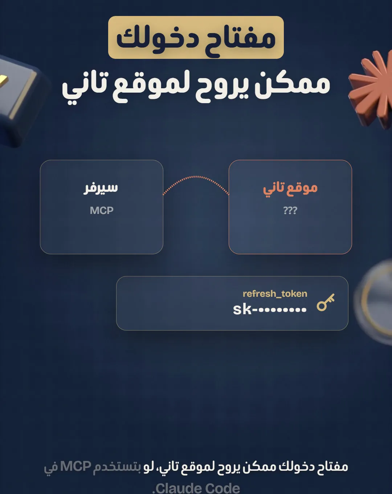
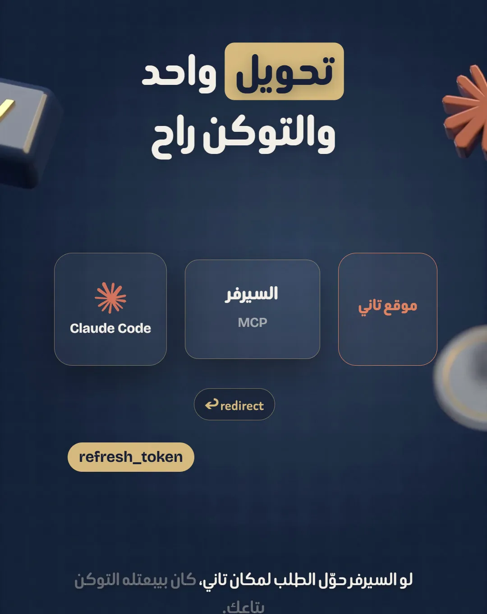
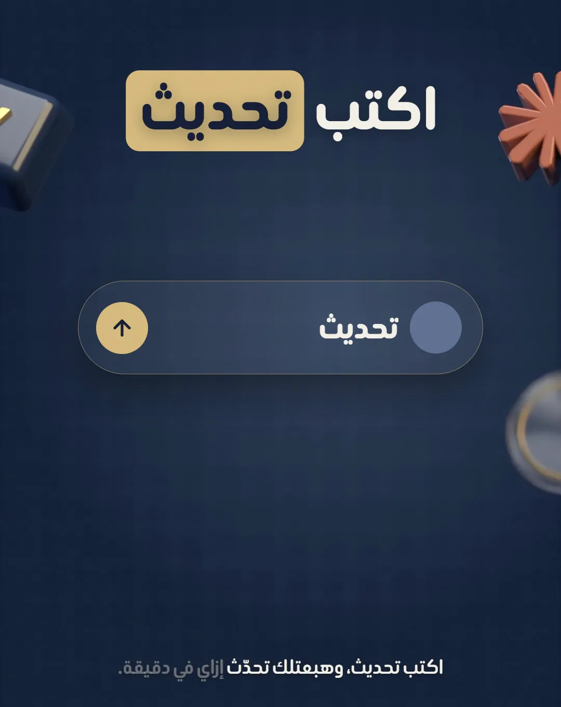
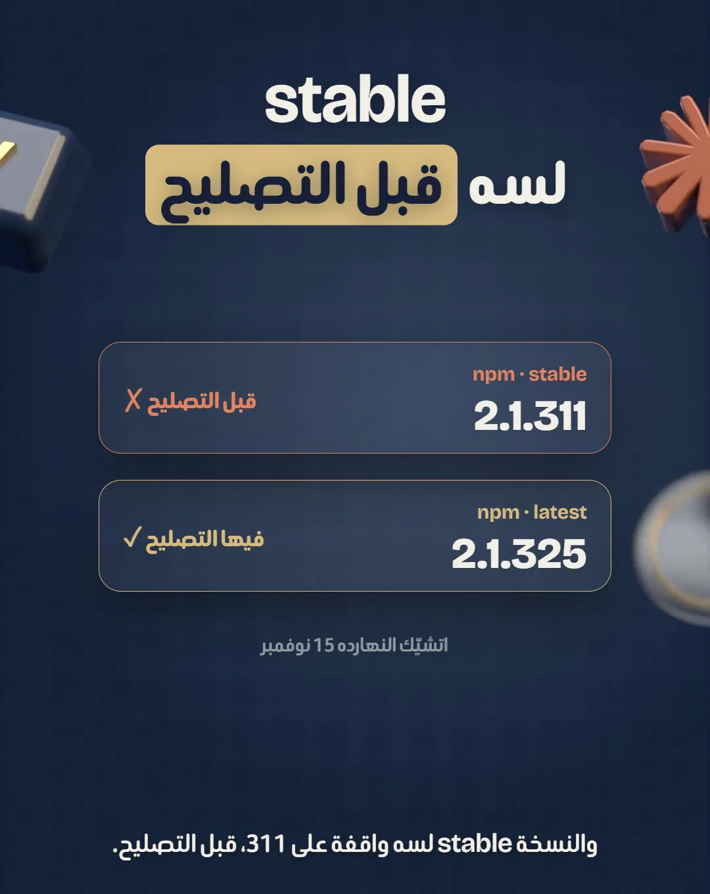

مفتاح دخولــكممكن يروح لموقع تانـــي
لو بتستخدم MCP في Claude Code: لو سيرفر MCP حوّل طلب تسجيل الدخول لمكان تاني، Claude Code كان بيبعت أسرار زي الـ refresh token للموقع التاني. ده اتصلّح في Claude Code 2.1.321 يوم 9 نوفمبر 2026. حدّث في دقيقة بالخطوات دي.


- 01
الخبر بالظبط
في صفحة الإصدارات الرسمية على GitHub، نسخة 2.1.321 (9 نوفمبر 2026) فيها تصليح: لما سيرفر MCP يعمل redirect لطلب OAuth لموقع تاني، Claude Code كان بيبعت معاه أسرار زي الـ refresh token. يعني اللي بيستخدم سيرفرات MCP عليها تسجيل دخول هو اللي محتاج يحدّث.
صفحة الإصدار على GitHub ↗
مثال من الريل: المفتاح رايح لموقع مش المفروض يروحله - 02
اعرف نسختك
افتح التيرمنال واكتب الأمر ده. لو الرقم أقل من 2.1.321 (زي 2.1.311) يبقى نسختك قبل التصليح.
claude --version
سيرفر MCP بيحوّل الطلب، والتوكن بيروح معاه - 03
حدّث في دقيقة
لو نزّلته بـ npm، نزّل آخر نسخة من قناة latest بالأمر الأول. ولو نزّلته بالـ installer الرسمي، استخدم claude update. وبعدها اقفل Claude Code وافتحه تاني، واتأكد بـ claude --version إن الرقم بقى 2.1.321 أو أعلى.
npm install -g @anthropic-ai/claude-code@latest claude update claude --version
التصليح في نسخة 2.1.321 من صفحة الإصدارات الرسمية - 04
خلي بالك من stable
لما اتشيّك يوم 15 نوفمبر، النسخة stable على npm كانت لسه 2.1.311 (قبل التصليح)، وlatest كانت 2.1.325 (فيها التصليح). يعني لو التحديث التلقائي عندك على قناة stable، claude update لوحده مش هيوصّلك للتصليح لحد ما stable تتحدّث. غيّر القناة لـ latest من /config، أو نزّل latest بأمر npm اللي فوق.
npm view @anthropic-ai/claude-code dist-tags
stable لسه على 2.1.311، وlatest فيها التصليح
نصايح صغيرة
- اكتب /mcp جوّه Claude Code تشوف السيرفرات اللي متوصّل بيها، وشيل أي سيرفر مش عارف مصدره.
- لو كنت شاكك إن توكن اتسرّب، اعمل logout من السيرفر ده وادخل تاني عشان يطلعلك توكن جديد.
- الأمر الأخير (npm view) بيوريك آخر رقم في كل قناة، عشان تعرف stable وصلت لفين.
عايز حد يعملهولك؟
مش فاضي تتعلم وتعمل بنفسك؟ أنا بعمل ريلز لبراندك بنفس الطريقة اللي بشرحها هنا.